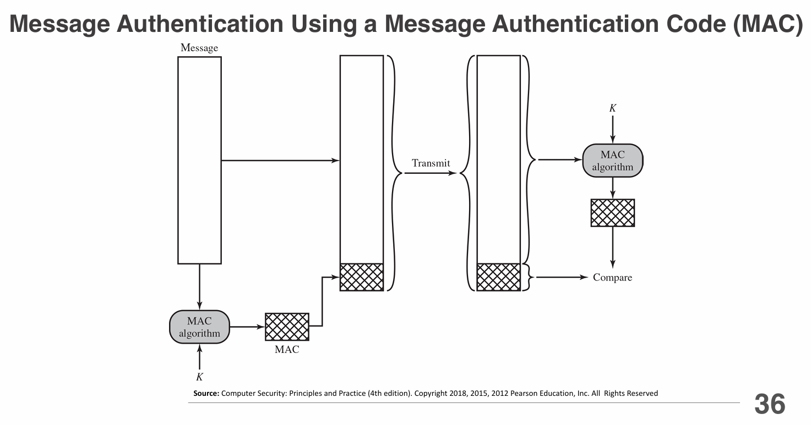
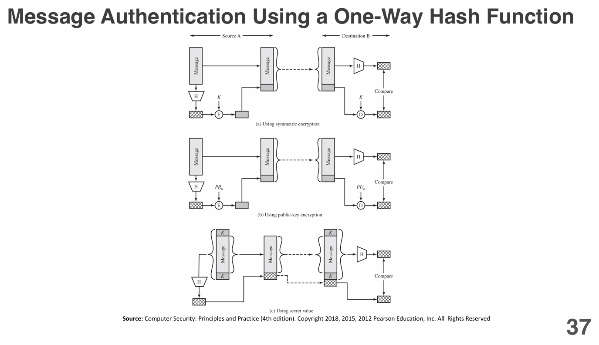
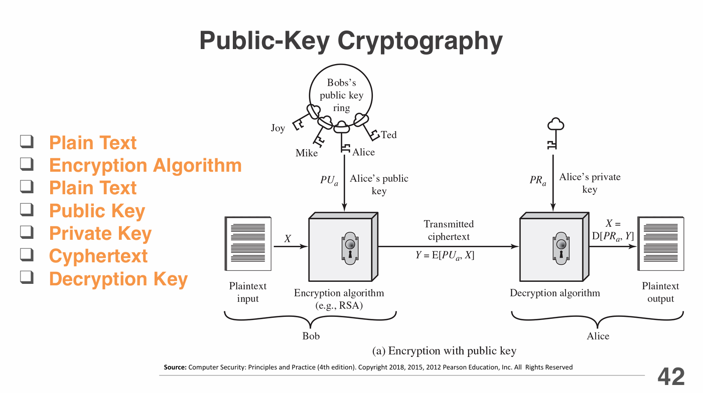
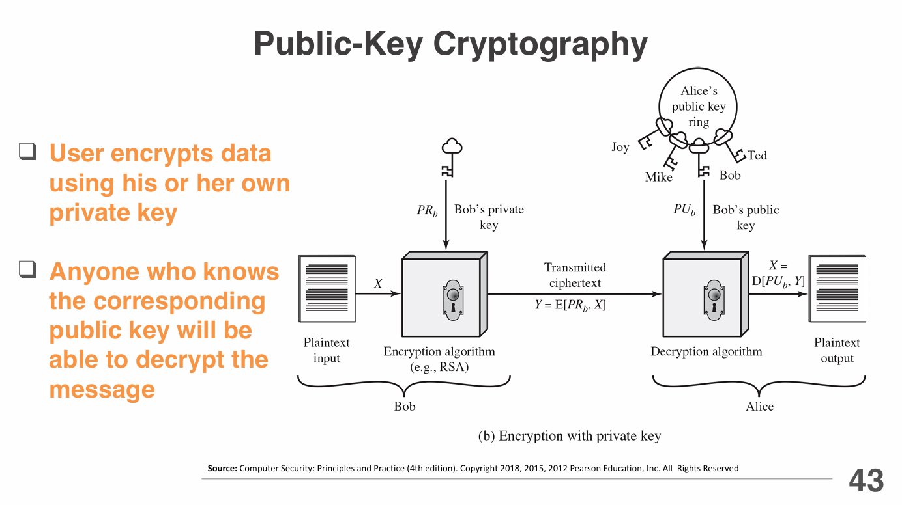
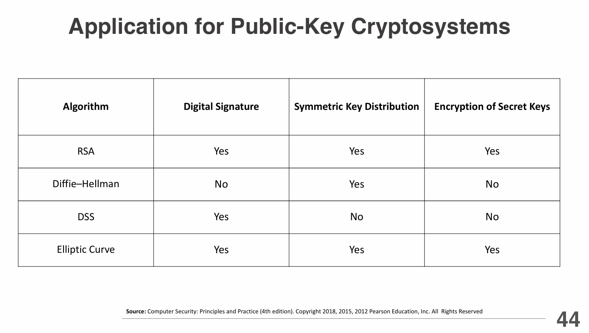
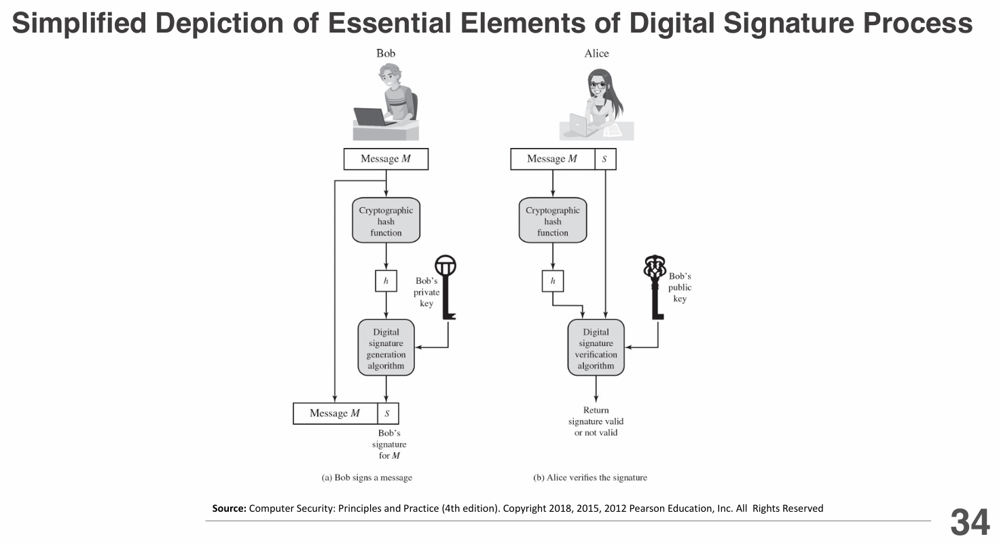
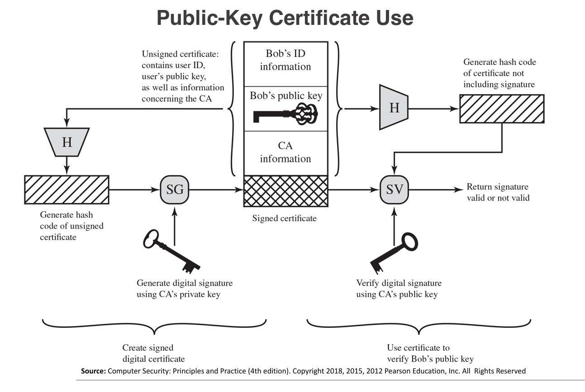
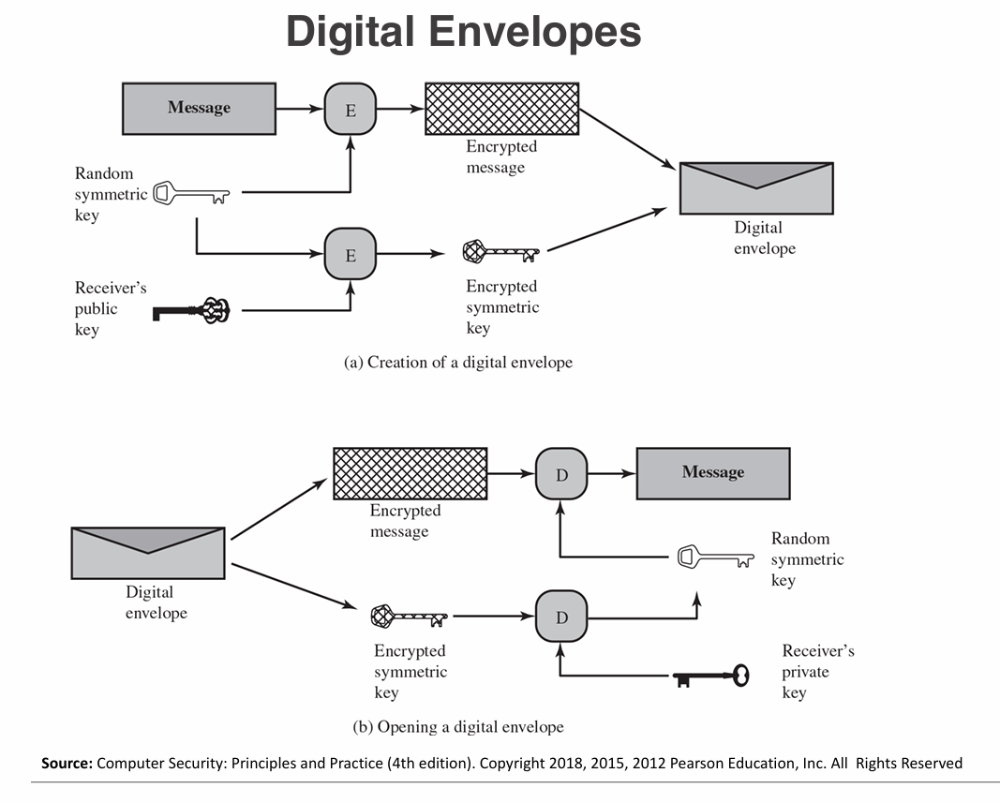

Lecture 4 & 5
Date Taken: Fall 2025
Status: Completed
Reference: LSU Professor Daniel Donze, ChatGBT
Public Key Infrastructure (PKI)
PKI is a framework of technologies, policies, and procedures used to manage digital keys and certificates to enable secure electronic communication.
PKI is the backbone for many security services like HTTPS, digital signatures, and encrypted emails.
Key Components:
- Public and Private Keys: A pair of cryptographic keys used for secure communication. The public key encrypts data, while the private key decrypts it.
- Digital Certificates: Electronic documents that verify the identity of individuals, organizations, or devices. They contain the public key and are issued by a trusted Certificate Authority (CA).
- Certificate Authority (CA): A trusted entity that issues and manages digital certificates. It verifies the identity of certificate requesters before issuing certificates.
- Registration Authority (RA): An intermediary that verifies the identity of users requesting certificates before they are issued by the CA.
- Certificate Revocation List (CRL): A list of revoked certificates that are no longer valid. It helps ensure that compromised or expired certificates are not used.
- Key Management: The processes and policies for generating, distributing, storing, and revoking cryptographic keys to ensure their security and integrity.
Symmetric Encryption
Symmetric encryption uses the same (shared) key for both encryption and decryption.
It is fast and efficient for large amounts of data but requires secure key distribution.
- Examples: AES (Advanced Encryption Standard), DES (Data Encryption Standard), 3DES (Triple DES).
- Use Cases: Encrypting files, databases, and communication channels where both parties can securely share the key.
Attacking Symmetric Encryption
Attacking symmetric encryption means trying to break or weaken a cryptographic system that uses the same key for encryption and decryption.
Understanding these attacks is essential for learning how to design or choose secure algorithms. Here's some examples:
- Brute Force Attack: Trying all possible key combinations until the correct one is found. The longer the key, the more secure it is against brute force attacks.
- Cryptanalysis: Analyzing the encryption algorithm and its weaknesses to find patterns or vulnerabilities that can be exploited to break the encryption.
- Key Management Attacks: Targeting the processes of key generation, distribution, and storage to gain access to the symmetric key.
Data Encryption Standard (DES)
DES is a symmetric-key algorithm for the encryption of digital data.
It was widely used in the past but is now considered insecure due to its short key length (56 bits), making it vulnerable to brute-force attacks.
- Structure: DES operates on 64-bit blocks of data using a series of permutations and substitutions based on a 56-bit key.
- Weaknesses: The short key length makes it susceptible to brute-force attacks, and advances in computing power have rendered it obsolete for secure applications.
- Successors: Triple DES (3DES) was introduced to enhance security by applying the DES algorithm three times with different keys, but it is also being phased out in favor of more secure algorithms like AES.
Triple DES (3DES)
Triple DES (3DES) is an enhancement of the original DES algorithm that applies the DES encryption process three times to each data block.
It was developed to provide a more secure alternative to DES, which had become vulnerable to brute-force attacks due to its short key length.
- Structure: 3DES uses three 56-bit (168-bits) keys (K1, K2, K3) and performs the following operations: Encrypt with K1, Decrypt with K2, Encrypt with K3.
- Key Length: The effective key length of 3DES is 112 bits (when using two keys) or 168 bits (when using three keys), making it significantly more secure than DES.
- Use Cases: 3DES has been used in various applications, including financial services and secure communications, but it is being phased out in favor of more modern algorithms like AES due to its slower performance and vulnerabilities to certain attacks.
Advanced Encryption Standard (AES)
AES is a widely used symmetric encryption algorithm that provides strong security and efficiency.
It is the standard for encrypting sensitive data and is used in various applications, including secure communications, data storage, and financial transactions.
This became the standard in 2001, replacing DES and 3DES due to their vulnerabilities.
- Structure: AES operates on 128-bit blocks of data and supports key sizes of 128, 192, or 256 bits. It uses a series of substitution and permutation operations in multiple rounds to transform plaintext into ciphertext.
- Security: AES is considered highly secure and resistant to known cryptographic attacks. Its strength increases with longer key lengths, making it suitable for protecting sensitive information.
- Use Cases: AES is widely used in various applications, including VPNs, secure file storage, wireless communications (WPA2), and government communications.
Practical Security Issues
Several practical security issues can arise when implementing and using encryption systems.
These issues can compromise the effectiveness of encryption and expose sensitive data to unauthorized access.
Typically, symmetric encryption is applied to a unit of data larger than a single 64-bit or 128-bit block.
This is done using a mode of operation, which defines how to repeatedly apply the cipher's single-block operation to securely transform amounts of data larger than a block.
Common modes include ECB (Electronic Codebook), CBC (Cipher Block Chaining), and GCM (Galois/Counter Mode).
Some common practical security issues include:
- Key Management: Securely generating, distributing, storing, and revoking cryptographic keys is crucial to maintaining the integrity of encryption systems.
- Algorithm Selection: Choosing strong, well-vetted encryption algorithms and avoiding outdated or weak ones is essential for effective security.
- Implementation Flaws: Poorly implemented encryption algorithms can introduce vulnerabilities, such as side-channel attacks or improper padding.
- User Practices: Educating users on secure password practices and the importance of protecting sensitive information helps prevent social engineering attacks.
- Regulatory Compliance: Adhering to industry standards and regulations (e.g., GDPR, HIPAA) ensures that encryption practices meet legal requirements for data protection.
Block & Stream Ciphers
Block ciphers and stream ciphers are two types of symmetric encryption algorithms used to secure data.
They differ in how they process and encrypt data, making them suitable for different use cases.
- Block Ciphers: Encrypt fixed-size blocks of data (e.g., 64 or 128 bits) using the same key for each block. Examples include AES and DES.
- Stream Ciphers: Encrypt data one bit or byte at a time, often using a keystream generated from a seed value. Examples include RC4 and Salsa20.
- Use Cases: Block ciphers are typically used for encrypting files and data at rest, while stream ciphers are often used for real-time communications and streaming data.
Message Authentication
Message authentication ensures that a message has not been altered and verifies the sender's identity.
It provides integrity and authenticity to communications, preventing tampering and impersonation.
- Hash Functions: Generate a fixed-size hash value from the message, which can be used to verify integrity. Examples include SHA-256 and MD5.
- Message Authentication Codes (MACs): Combine a secret key with the message to create a unique code that verifies both integrity and authenticity. Examples include HMAC (Hash-based MAC).
- Digital Signatures: Use asymmetric cryptography to sign messages, providing non-repudiation and authenticity. Examples include RSA and ECDSA signatures.
Message Authentication Without Confidentiality
Message authentication without confidentiality focuses on ensuring the integrity and authenticity of a message without encrypting its content.
This approach is useful when the message needs to be publicly readable but still requires verification that it has not been altered and comes from a legitimate source.
- Hash Functions: Generate a hash value from the message, which can be shared alongside the message for integrity verification.
- Message Authentication Codes (MACs): Use a secret key to create a MAC that accompanies the message, allowing recipients to verify its authenticity and integrity.
- Digital Signatures: Sign the message with a private key, allowing anyone with the corresponding public key to verify its authenticity without encrypting the message itself.


Security Hash Functions
Security hash functions are cryptographic algorithms that take an input (or 'message') and produce a fixed-size string of characters, typically a hash value or digest.
They are designed to be fast to compute and difficult to reverse-engineer, ensuring that even a small change in the input results in a significantly different hash value.
There are two approaches to attacking a secure hash function:
- Cryptanalysis - Exploit logical weaknesses in the algorithm
- Brute Force - Try all possible inputs to find a collision
Common security hash functions include SHA-256 , SHA-3, and BLAKE2, which are widely used in digital signatures, data integrity verification, and password hashing.
Secure Hash Algorithms (SHA) are a family of cryptographic hash functions designed to provide data integrity and authenticity.
SHA-1, SHA-2 (including SHA-256 and SHA-512), and SHA-3 are commonly used variants, with SHA-256 being widely adopted for its balance of security and performance.
Public-Key Encryption Syructure
Public-key encryption, also known as asymmetric encryption, uses a pair of keys: a public key for encryption and a private key for decryption.
This structure allows secure communication without the need to share a secret key in advance.



Requirements For Public-Key Cryptosystems
Public-key cryptosystems must meet several requirements to ensure secure and effective communication.
These requirements include:
- Key Pair Generation: The system must be able to generate a pair of mathematically related keys (public and private) that are unique to each user.
- Public Key Distribution: The public key must be easily distributable and accessible to anyone who wants to send encrypted messages to the key owner.
- Private Key Security: The private key must be kept secret and secure by the key owner, as it is used for decryption and signing.
- Encryption and Decryption: The system must allow anyone to encrypt messages using the recipient's public key, while only the recipient can decrypt them using their private key.
- Digital Signatures: The system should support digital signatures, allowing users to sign messages with their private key, which can be verified by others using the corresponding public key.
- Non-repudiation: The system should provide non-repudiation, ensuring that a sender cannot deny having sent a message if it was signed with their private key.
- Scalability: The system should be scalable to accommodate a large number of users and keys without significant performance degradation.
- Resistance to Attacks: The cryptosystem must be resistant to various types of attacks, such as brute-force attacks, chosen-plaintext attacks
Asymmetric Encryption Algorithms
Asymmetric encryption algorithms use a pair of keys (public and private) for secure communication.
Public keys are used for encryption, while private keys are used for decryption.
Common asymmetric encryption algorithms include:
- RSA (Rivest-Shamir-Adleman): One of the first public-key cryptosystems, widely used for secure data transmission and digital signatures. It relies on the mathematical properties of large prime numbers.
- ECC (Elliptic Curve Cryptography): Uses the mathematics of elliptic curves to provide strong security with smaller key sizes, making it efficient for mobile and resource-constrained devices. Security Like RSA, but with much smaller keys
- DSA (Digital Signature Algorithm): A standard for digital signatures that provides authentication and integrity for messages. It is often used in conjunction with other encryption algorithms. Provides only a digital signature function with SHA-1. Cannot be used for encryption or key exchange.
- ElGamal: An asymmetric encryption algorithm based on the Diffie-Hellman key exchange, providing both encryption and digital signatures.
- Diffie-Hellman: A key exchange algorithm that allows two parties to securely share a secret key over an insecure channel, which can then be used for symmetric encryption.



Random Numbers
Random numbers are essential in cryptography for generating keys, initialization vectors, and nonces.
They must be unpredictable and uniformly distributed to ensure the security of cryptographic systems.
There are two main types of random number generators:
- Pseudo-Random Number Generators (PRNGs): Algorithms that use mathematical formulas or pre-calculated tables to produce sequences of numbers that approximate the properties of random numbers. They are deterministic and can be reproduced if the initial seed value is known.
- True Random Number Generators (TRNGs): Devices that generate random numbers from physical processes, such as electronic noise or radioactive decay. They are non-deterministic and provide higher security for cryptographic applications.